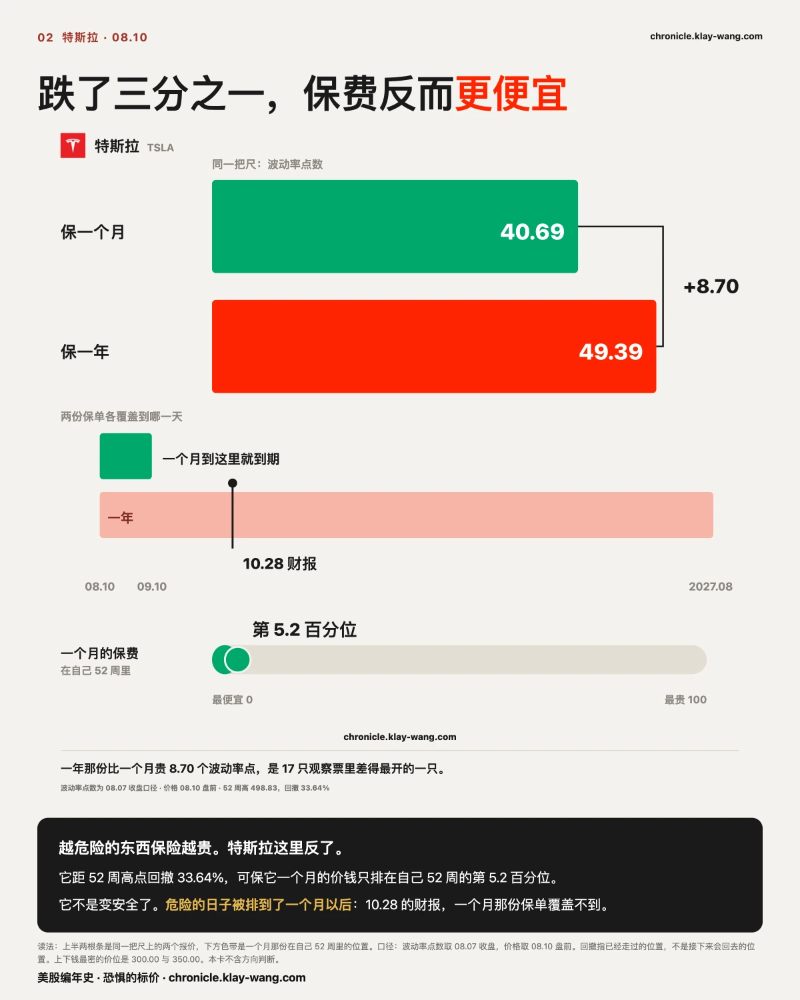
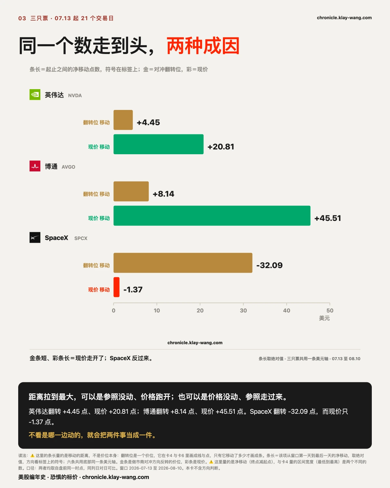
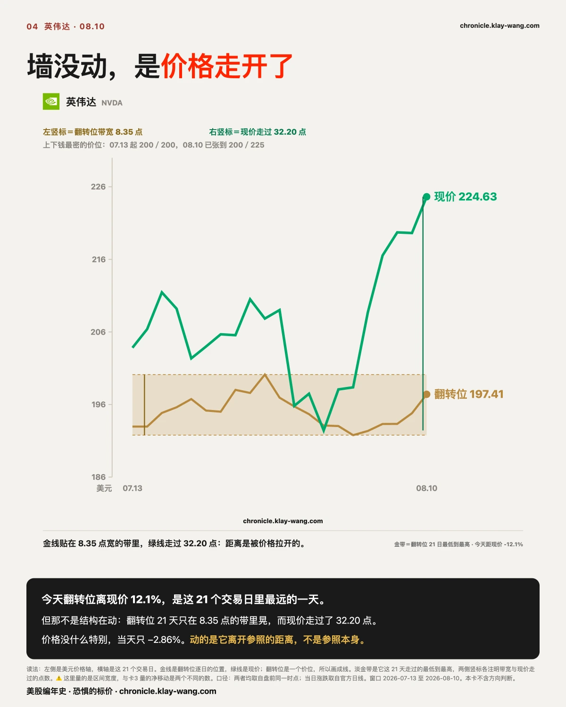
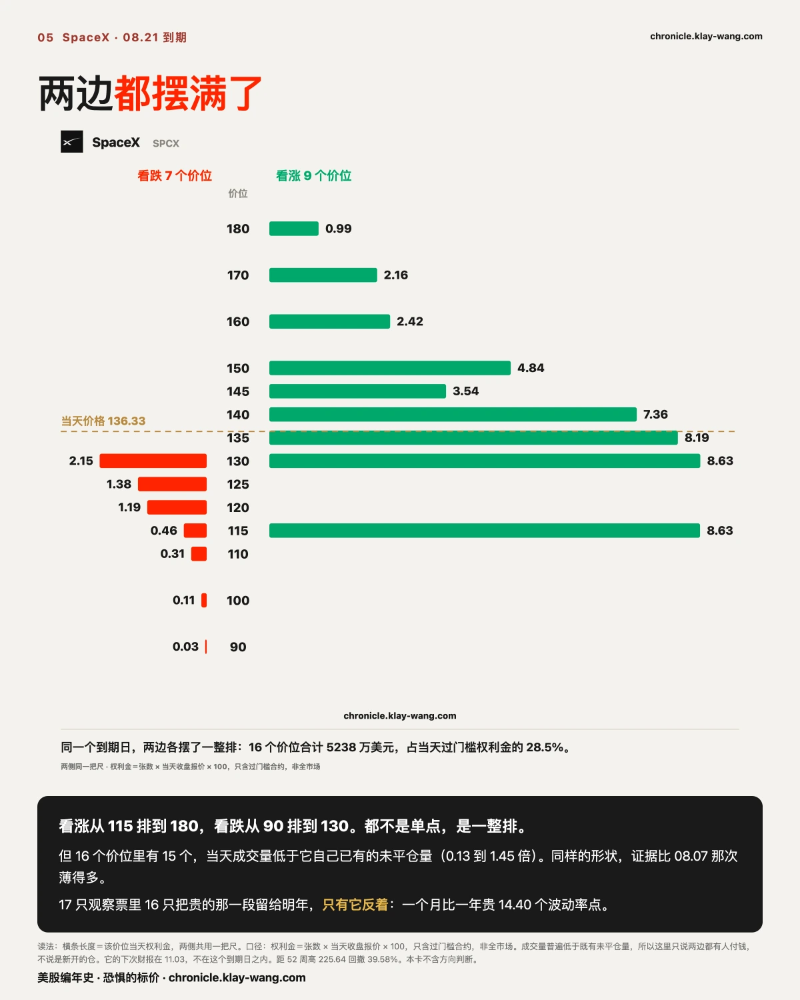
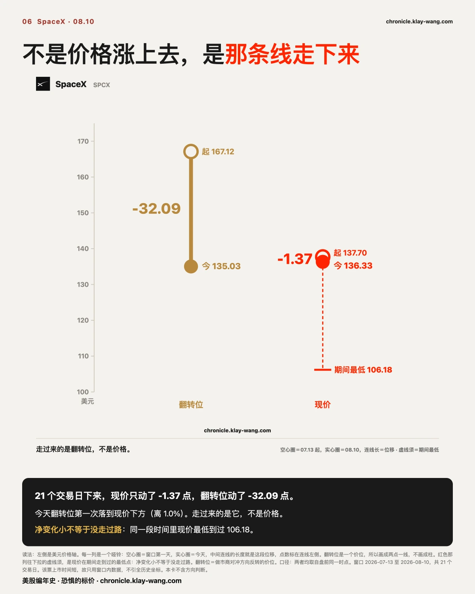
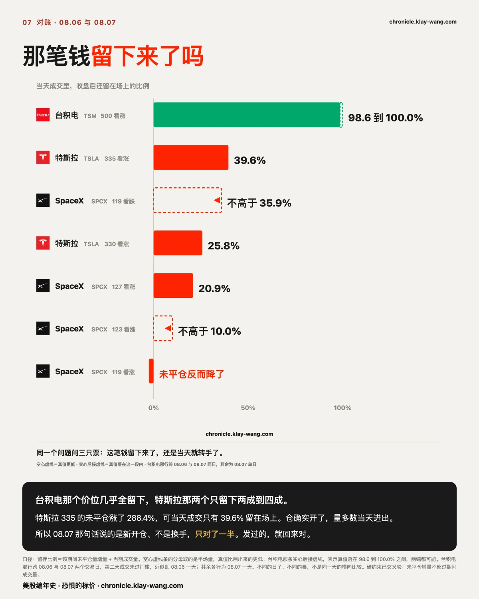
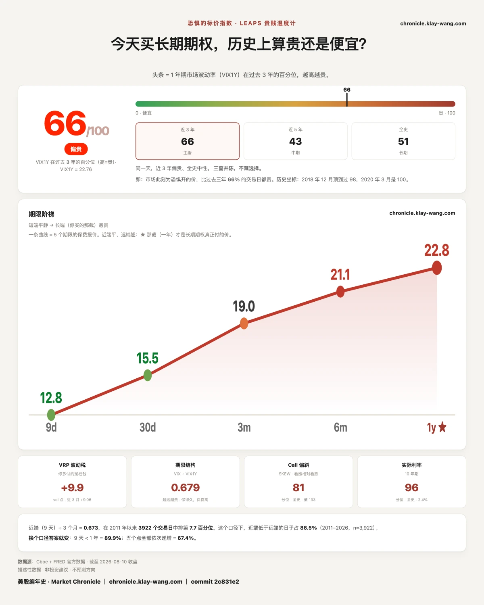

最"危险"的那只票，短期保费居然最便宜？ · 8.10-8.14
⚡ 三行速览
- 特斯拉距 52 周高点回撤 33.6%，可保它一个月的价钱在自己 52 周里只排第 5.2 百分位，而保一年要贵 8.70 个波动率点，是 17 只票里差得最开的一只。
- 上一期挂出去对账的那笔钱有了答案：台积电那个价位上的成交几乎全部留在了场上，特斯拉那两个价位只留下两成到四成。
- 恐惧的标价指数升到 66，连升两个交易日；而给未来一个月买保护的价钱，仍在自己 52 周的最便宜一成里。
这一期讲什么
八节，从整个市场一路走到单只票，最后回来对账：
第 1 节 · 市场内部谁在涨谁在跌
11 个板块的当天涨跌、502 只成分股的涨跌家数，以及两个改得很慢的数：估值与实际利率。不涉及任何一只票。
第 2 节 · 特斯拉：保费的价格
它跌了三分之一，而保它一个月的价钱在自己 52 周里排第几。
第 3 节 · 先说清怎么读一个数
后面三节都要用到同一个指标。这一节讲它变到极值时，成因可以完全相反。不熟悉期权的话，这一节是入口。
第 4 节 · 英伟达：对冲结构的位置
一个价位 21 天几乎没动，而现价走开了。博通与它同一个形状，放在第 3 节里一起比。
第 5 节 · SpaceX：当天付了多少钱
同一个到期日上，16 个价位各押了多少。
第 6 节 · SpaceX：那个价位自己走了多远
与第 5 节同一只票的另一面。
第 7 节 · 上一期说过的话，回来对账
公开挂出去的一个问题有了答案，其中一半我们说错了。
第 8 节 · 保险的价格
收尾把今天放回一年的尺度上：买一年的保护贵不贵，短期和长期为什么不一样。
怎么读： 只想知道市场今天贵不贵，读第 1 节和第 8 节就够。想知道自己那只票发生了什么，直接跳到它那一节。不熟悉期权先读第 3 节。每一节的第一句都是不带术语的结论，往下才是坐标与口径，在哪一层停下都能拿走一件完整的事。

〔大盘 · 内部结构〕情绪说贪，账本说贵
这一节离开个股，看整个市场内部： 板块之间差多少、涨的票多还是跌的票多、以及两个改得很慢的数。
同一天，恐贪指标读到贪婪区间，可下跌的股票比上涨的多。
08.10 的恐贪指标是 64.4，落在贪婪那一段。但当天 502 只成分股里，229 只上涨、269 只下跌、4 只平盘，上涨占比 46.0%。指标落在贪婪那一段，多数股票却在往下走。
上涨的钱高度集中。11 个板块里能源涨 4.66%，一枝独秀；第二名医疗保健涨 1.67%。往下看，房地产跌 1.29%、公用事业跌 1.10%、科技跌 0.88%。最好和最差之间隔着 5.95 个百分点。
同时有两个慢变量停在很高的位置：估值分位 92.9，在近三年的前列；10 年期实际利率处在全史第 95.8 百分位，值 2.4%。实际利率是所有长期估值的分母，它待在这个位置，意味着长钱要求的回报一直没降下来。
一天的情绪可以很贪，账本上的两个数改不了那么快。 这一段只描述已经存在的价格与家数，不涉及谁在买谁在卖，成交记录也回答不了那个问题。

〔个股 · 特斯拉〕跌了三分之一，保费反而更便宜
这一节只讲一件事：保它一段时间要花多少钱，以及这个价钱在它自己的历史里排第几。 不谈业务，不谈估值。
越危险的东西，保险越贵。这是常识。特斯拉这里反了。
先把这张纸是什么说清楚。期权就是一张有条件的保单，条件写在价格上：买一张涨过 350 才算赢的看涨期权，等于花钱押它涨过 350；没涨过，这张纸到期归零。价格越高的那个条件越难达到，所以越便宜。全市场每天在几十个价位上同时给这些条件报价，报出来的那一排数字，就是市场对这东西会晃多大的定价。
特斯拉的 52 周最高价是 498.83。08.10 盘前它在 331.00，距那个高点回撤 33.6%。那是已经走过的位置，不是接下来会回去的位置。
而保它未来一个月的价钱，按 08.07 收盘计，在它自己过去 52 周里只排第 5.2 百分位。也就是说，过去一年里有九成五的日子，为特斯拉的短期波动付的钱都比现在贵。
同一天，保它未来一年的价钱是 49.39，比一个月那份高出 8.70 个波动率点。这个差值在 17 只观察票里是最大的一个。
它不是变安全了。是危险的日子被排到了一个月以后。
特斯拉下一次财报在 10.28。一个月的那份保单覆盖不到那天，一年的那份覆盖得到。两份保单价格差得最开的这只票，恰好也是最近一次大事落在一个月之外的那只票。这个解释可以被推翻：如果 10.28 之后那道差值明显收窄，就说明它定的是那场财报；如果财报过去了差值照旧，那定的就不是它，这条得改。
上下两道钱最密的价位是 300 和 350，当天的价格夹在中间。市场给它一个月的活动范围报了上下 12.15，约 3.70%。

〔方法 · 三只票〕同一个数走到头，两种成因
这一节讲怎么读一个数，不讲某一只票的好坏： 同一个读数变到极值，成因可以完全相反。
距离拉到最大，可以是参照没动、价格跑开；也可以是价格没动、参照走过来。
先说这个参照是什么。期权市场里有一个价位，做市商在它上方和下方的对冲方向是相反的：价格在它上方，对冲会压住波动；跌到它下方，对冲会放大波动。这个价位不是谁定的，是全市场持仓算出来的，每天都在挪。它离现价多远，决定了这套机制眼下有多大余地。
07.13 到 08.10 这 21 个交易日里，三只票都把这个距离拉到了各自的极值。但成因完全不同。
英伟达那个价位从 192.96 走到 197.41，21 天只动了 4.45 点；同期现价从 203.82 走到 224.63，走了 20.81 点。博通更悬殊：价位动了 8.14 点，现价动了 45.51 点。
SpaceX 反过来。它的价位从 167.12 掉到 135.03，走了 32.09 点；而现价从 137.70 到 136.33，21 天净变化只有 1.37 点。
不看是哪一边动的，就会把两件事当成一件。 前两只是价格跑开了参照，后一只是参照走过来找价格。可推翻条件：如果接下来英伟达那个价位开始快速上移追价格，说明它此前的静止只是滞后、不是被锚住，这条得改。

〔个股 · 英伟达〕墙没动，是价格走开了
这一节只讲它的对冲结构，不讲财报也不讲业务： 一个价位 21 天几乎没动，而现价走开了。
今天那个价位离现价 12.1%，是这 21 个交易日里最远的一天。
这话容易被读成结构在剧烈变化。实际相反：那个价位 21 天只在 8.35 点宽的一条带里晃，而现价走过了 32.20 点的区间。距离是被价格拉开的，不是被结构推开的。
同一天它的价格本身平平无奇：收盘 217.55，跌 2.86%，真实振幅 3.29%，在它自己 20 天里排第 50 百分位，正正中间。
上下钱最密的两个价位说的是同一件事：07.13 那天是 200 和 200，两边挤在一个数上；今天是 200 和 225，上面那道跟着价格往上让了 25 点，下面那道一步没动。
可推翻条件：如果那个价位在接下来几个交易日跳到 210 以上，说明它只是反应慢；如果继续钉在 190 到 200 之间，那它是被持仓结构锚住的。

〔个股 · SpaceX〕有人在同一个到期日上，把两边都摆满了
这一节只讲一件事：这只票在同一个到期日上，当天有多少钱押在哪些价位。 不推方向，不猜是谁。
九个看涨价位，七个看跌价位，同一天，同一个到期日。
08.21 到期的 SpaceX，当天有 16 个价位同时过了门槛。看涨那侧从 115 一路排到 180，九个价位连着；看跌那侧从 90 排到 130，七个价位连着。两边都不是单点，是一整排。
按张数乘当天收盘报价乘 100 计，这 16 个价位合计 5238 万美元，占当天所有过门槛合约权利金的 28%。这里的合计只含过了门槛的合约，不是全市场。
但强度得说清楚：除了 170 那一个价位，其余 15 个的当天成交量都低于它自己已有的未平仓量，比值在 0.13 到 0.94 之间。08.07 那次的三个价位是 2.37 到 2.77，成交量是存量的两三倍。同样的形状，这次的证据薄得多，所以这里只说两边都有人付钱，不说是新开的仓。
值得记一笔的是它的期限形状。17 只观察票里，15 只都是保一年比保一个月贵，只有 SpaceX 反着：一个月 85.34，一年 70.94，一个月那份贵出 14.40 个波动率点。
别的票把贵的那一段放在一年以后，它放在这个月。 它下一次财报在 11.03，不在这个月里，所以这个形状不是财报撑起来的。可推翻条件写在这里：如果 08.21 那批到期之后，一个月那份掉回到一年那份下方，说明贵的是这几周的某件事；如果照旧更贵，那是这只票的常态，本刊此前把它当异常读错了。
它距 52 周最高价 225.64 回撤 39.58%。

〔个股 · SpaceX〕不是价格涨上去，是那条线走下来
这一节讲的是同一只票的另一面： 第 5 节看的是当天付了多少钱，这一节看的是那个价位 21 天走了多远。
21 个交易日下来，现价只动了 1.37 点，那个价位动了 32.09 点。
07.13 它的价位在 167.12，比当时的现价高出 21.4%。今天它在 135.03，第一次落到现价下方。这 21 天里，之前每一天它都在现价上方。
但净变化小不等于没走过路。 同一段时间里它的现价最低到过 106.18，然后又涨回来。净变化是终点减起点，它不记录路上发生了什么。两个数放在一起才完整：走了很远的路，回到了几乎相同的位置。
它今天涨 4.23%，是 17 只观察票里最大的涨幅；真实振幅 6.81%，在它自己 20 天里排第 55 百分位，完全正常。
可推翻条件：如果这个价位接着往下走、离现价越来越远，那它是在跟随一个更低的持仓重心；如果弹回现价上方，今天这次穿越就只是一天的事。

〔对账 · 上一期〕那笔钱留下来了吗
这一节是回头对账： 08.07 公开挂了一个当时算不出来的问题，今天有数了，其中一半我们说错了。
发过的，就回来对。这一次我们对了一半。
08.07 那期写了台积电 12.18 到期的一批成交，并且公开挂了一个问题：这些钱是留在场上了，还是当天就转手走了。当时算不出来，我们说了等数据。现在算出来了。
分两件事看。成交量是一天里换了多少手，同一张纸来回买卖十次算十次。未平仓量是收盘后真正还留在场上的仓位，一张纸留着就算一张。前者是热闹，后者是留下来的东西。两者相除，就知道那天的热闹里有多少变成了真仓位。
台积电那个价位（500 那个条件）：08.06 成交 19977 张，此后两个交易日里未平仓量增加了 20195 张。几乎全部留了下来。
同一把尺子量特斯拉。08.07 它 330 和 335 两个价位各成交 16077 张与 21464 张，未平仓量随后分别增加 133% 与 288%。翻倍到近三倍，这不是换手能造出来的，仓确实开了。但那天的成交里，只有 25.8% 与 39.6% 留了下来。
SpaceX 那四个价位更薄：127 那个价位留下 20.9%，另外三个分别不高于 10.0%、不高于 35.9%，而 119 那个看涨价位的未平仓量不升反降。
所以 08.07 那句话说的是，这是在既有仓位之外新开的仓，不是仓位内换手。这句对了一半。新仓确实开了，未平仓量的增幅是硬的；但那天成交出去的量，多数当天就进出了。一句话里两个主张，一个立住，一个没立住，我们把它拆开记在这里。
需要说明的是两把尺子的量程不同：台积电那个数跨了 08.06 与 08.07 两个交易日（第二天的成交没过门槛，所以近似就是 08.06 一天），特斯拉与 SpaceX 那几个数是 08.07 一天。不同的日子、不同的票，不是同一天的横向比较。

〔大盘 · 保险的价格〕短期在打折，长期在涨价
这一节不涉及任何一只票： 只看整个市场为不同长度的未来分别付多少钱。
我有个恐惧温度计，量的就是市场现在花多少钱，给未来一年买保险。保险越贵，说明市场越怕。
今天 66 分（满分 100），意思是这份保险贵到了过去三年的前 34%。
关你什么事： 这个数字不是给买保险的人看的，是给卖保险的人开的价。
先分清两个数。常说的恐慌指标量的是未来 30 天，一条新闻就能让它跳；我们这支量的是未来一年，一天动两个点就算大动作。短端是情绪，长端是成本。 做市商必须报价，他不猜方向，只算一件事：承担这个风险要收多少才不亏。这个数是算出来的，不是感觉出来的，一旦真动了，说明有人的成本模型改了。
08.10 同一时点，五个期限排成一条上坡：9 天 12.77，30 天 15.46，3 个月 18.98，6 个月 21.14，1 年 22.76。短端与长端的比值 0.679，这个比值在过去三年里排第 16.0 百分位，越低说明短端相对长端越便宜。
这几天动的是长端。 恐惧的标价从 61.5 到 63.4 再到 66，连升两个交易日；同期短端只从 14.9 回摆到 15.46。
你的车要是出了事故，第二年续保，保费多半要涨：保险公司认定这条路以后还会出事，才敢多收钱。这几天反过来了，眼前的路看着挺太平，可长期那张保单在悄悄提价。路况没变，长期保费在涨。 卖保险的是全市场最会算账的一批人，他们提长期不提短期，意思是在他们的账本上，要多收钱的不是这个月，是这一年。
这个形状不止在大盘上。17 只观察票里，15 只都是保一年比保一个月贵，1 只反着，1 只当天没取到。它不是指数的特例，是今天几乎每一只票的形状。
它不告诉你明天涨跌，它告诉你，那批必须给未来一年报价、并且要为报错付钱的人，今天报了多少。
恐惧的标价指数（Fear-Price Index）· 2026-08-10 · 读数 66/100：一年期波动率 VIX1Y 为 22.76，处于近三年第 66 百分位，高即贵。逐日台账与口径 → chronicle.klay-wang.com · 转载注明：恐惧的标价指数 · Market Chronicle
下一期回来对三件：特斯拉那道 8.70 个点的期限差有没有收窄、SpaceX 08.21 那 16 个价位到期后剩下多少未平仓、以及长端是接着涨还是回头。特斯拉的双墙与期限结构逐日更新在 chronicle.klay-wang.com/options 的期权结构章节。
本站不提供投资建议，不预测方向，不做择时。